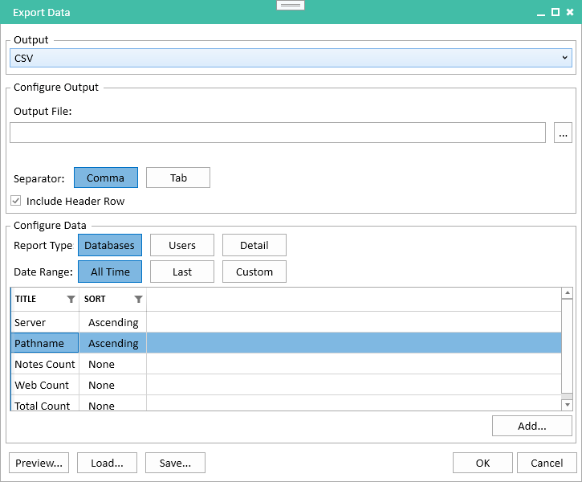
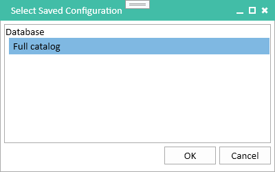

Exporting Data
Usage allows you to export data from both the Catalog and Usage modules. Three different report formats are available.
Databases
The Databases report has one row for each database in the catalog. It defaults to a basic set of catalog properties and usage data, and you can optionally add any additional properties you need.
Users
The Users report has one row for each user in the catalog. As with the Database report, a core set of catalog and usage properties are provided by default, and you can add any additional ones you need.
Detail
The Detail report is useful when you need to analyze which users are accessing which database. It contains one row for every user/database combination that has a non-zero usage count. So for a given database, you can see which users are accessing that database, and for a given user you can see which databases they have accessed. You can add additional catalog and usage properties to the report if needed.
Filtering Data
Reports respect any existing database and user filters you have defined. So, for example, a database that has been filtered out will not appear at all in Databases and Detail reports and will not be included in any usage counts in a Users report.
Note
Reports include only usage data by users. Server and Agent usage is excluded.
Creating a Report
To create a report, select Export Data from the File menu. This will display the Export Data dialog.

Configuring the Output Format
Usage currently only supports saving reports as a delimited text file. The file will be UTF-8 encoded.
- Output File The file where the output will be written. The file will be overwritten if it already exists.
- Separator Files can be written using either a comma or a tab as the field separator.
- Include Header Row Include a header containing the column names as the first row of the file.
Configuring the Report Type
The three different report types, Databases, Users and Detail are described above. Switching report type will replace the currently selected list of columns with a default set of columns appropriate for the new type.
Configuring the Date Range
Usage offers three date range selection options.
- All Time The report will include all usage counts for all time.
- Last The report will include usage data for a number of preceding time periods. Selecting this option will enable a numeric input field to select the number of periods and a selector for the period type: Year(s), Month(s) or Day(s). For example, you could choose to include data for the previous 7 days, the last 6 months or the last 1 year.
- Custom The report will include usage for a fixed time period. Selecting this option will enable two date input fields to enter the start and end dates of the range. You do not need to specify both, they default to the earliest and latest data available, respectively. For example, you can generate a year-to-date report by setting the From date to January 1 of the current year and leaving the To date blank. The dates that you specify are inclusive, so the previous example includes usage on January 1.
Configuring the Columns
Each report type comes with a default set of columns. These consist of the database server and pathname for database/detail reports, the user name for user/detail reports and basic Notes, web and total usage counts.
To remove one or more columns, select them in the column list and right-click to display the context menu. Choosing Remove from the menu will remove the selected columns. Note that the core catalog columns (database server and path, user name) cannot be removed since they are an essential part of the report. Attempting to remove them will display a warning message and the columns will not be removed.
To add additional columns, click the Add button below the column list. This will display the Add Columns dialog.

This dialog contains a categorized list of the columns available to be added to the the current report. You can select one or more columns to add to the report. If you have removed a column from the report accidentally, you can use this dialog to add it back. You may need to expand the categories to see the available columns.
Sorting the Output
Usage allows you to sort the report on any combination of columns. For each column, you can choose whether it should be sorted ascending, sorted descending or unsorted. Just like a standard Notes view, the first sorted column determines the primary sort order for the report, the next sorted column determines the secondary ordering and so on. You can drag columns up and down the list to rearrange the sort order if necessary. For example, to find the most used databases on each server, you would set the Server column to sort ascending, the Total Count column to sort descending and all other columns to sort None. This will group databases by server and then, within each server, arrange databases from the highest usage count to the lowest. You can interleave sorted and unsorted columns, so you may wish to leave the Pathname column next to the Server column to keep the full database path together, with the Total Count column following.
Preview
The Preview... button at the bottom left of the dialog will show up to 50 matching rows from the report. This allows you to check that you have the column definitions set up correctly before starting the export. It may take a long time for the preview dialog to display any rows if you have a lot of Usage data. In a sorted report, Usage needs to essentially generate the entire report in order to find the first few rows. However, the dialog will indicate that it is working, and you can close it at any time without waiting for the preview to complete.
Loading and Saving Reports
Usage allows you to save report configurations and reload them later. This is useful if, for example, you want to run the same report each month showing usage data for the previous month. The saved configuration contains the report type, date range and column configurations. It does not contain the output type and location since they may change from run to run.
Saving a Report
To save the current report configuration, click the Save... button. This will display a prompt asking for a name for the configuration.

You can choose any descriptive name here, it is simply used so that you can identify the configuration when you want to load it again. A short name will work best. If a configuration with this name already exists, you will be asked whether you want to overwrite it.
Loading a Report
To load a report configuration, click the Load... button. This will display the Select Saved Configuration dialog.

This shows all saved configurations, grouped by report type.
Note
You can delete a saved configuration from this dialog by right-clicking on a configuration and choosing Delete from the popup menu.